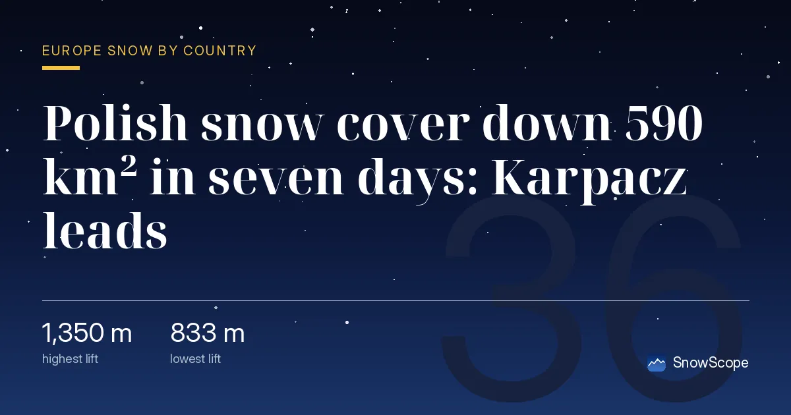

Polish snow cover down 590 km² in seven days: Karpacz leads
Poland has lost nearly half its snow cover in the past week, with white ground falling from 1,300 km² to just 710 km². Karpacz in the Karkonosze holds the deepest snow at 36 cm, ahead of three rivals clustered around 21 cm.
See the live snow forecast for Karpacz in the SnowScope appSnow depth, powder alerts and the 3D map, free.
A week of retreat
The retreat has been sharp. Seven days ago, 1,300 km² of Poland's ski terrain lay under snow. Today, only 710 km² remains white—a loss of 590 km² driven by mild temperatures and melt. Yesterday to today, the loss slowed: snow-covered ground shrank by 460 km² in that single day, but the rate is easing.
Thirty-one of 114 tracked resorts hold measurable depth. The snow line sits at 1,200 m: below that, most slopes are bare.
| Resort | Snow depth | New snow, 72 h | Coming, next days | Top |
|---|---|---|---|---|
| Karpacz | 36 cm | 7 cm | 10 cm | 1,350 m |
| Kasprowy Wierch | 23 cm | 6 cm | 8 cm | 1,958 m |
| Szrenica | 21 cm | 6 cm | 8 cm | 1,306 m |
| Stok Karpatka | 21 cm | 5 cm | 5 cm | – |
| COS Szczyrk | 21 cm | 1 cm | 3 cm | 1,244 m |

Mountain strongholds
Snow hangs on only in the high ranges. Above 1,500 m, complete cover persists—mean depth 15 cm across the band. Between 1,000 and 1,500 m, patchy snow covers half the slopes at an average of 3 cm. Below 1,000 m, almost nothing remains.
The Tatras lead the depth charts among mountain ranges, holding 8 cm of new snow from the past 72 hours. The Karkonosze follow closely with 7 cm, and the Beskids trail with 5 cm. These three ranges—all above 1,200 m—are where winter still has footing.
Karpacz pulls clear
Karpacz, in the Karkonosze at 1,350 m summit height, now leads Poland with 36 cm depth and 7 cm of snow in the past three days. No other resort matches that total. Kasprowy Wierch in the Tatras holds 23 cm and 6 cm fresh snow. Szrenica, also at 1,306 m, sits at 21 cm with the same 6 cm of new material.
Three resorts tie at 21 cm: Stok Karpatka, COS Szczyrk, and Szrenica. Stok received 5 cm in 72 hours, while COS Szczyrk gained only 1 cm, suggesting either thinner deposition or greater melt at that site. Kasprowy Wierch, despite being Poland's highest tracked resort at 1,958 m, holds less snow than Karpacz—a sign that recent storms favoured the northern Karkonosze.
What's ahead
The next three days bring up to 10 cm of new snow to the highest points. Karpacz is forecast to gain 10 cm by 20 November, Kasprowy Wierch and Szrenica each 8 cm. Over the full seven days to come, as much as 12 cm may fall at the best sites.
The snowiest day in the forecast is 20 November, when 4 cm is expected across favoured slopes. This arrival is modest by winter standards—no reset, but a small reprieve. Without major fresh snow, the upward trend will stall and the melt cycle may resume as the season enters late November.
Neighbours
Slovakia is faring better. Its white share stands at 13%, more than double Poland's 6%. Ski centrum Dedinky leads Slovakia with 42 cm—6 cm deeper than Karpacz—and Slovakia's forecast calls for up to 15 cm in the next week. Czechia, by contrast, is in worse shape than Poland: only 1% white cover, with Ramzová as leader at just 22 cm.
On the slopes
Early-season snow is thin and patchy. Rocks and bare ground are likely under slopes below 1,200 m. Focus on the high Tatras and Karkonosze; avoid lower runs. Check the official avalanche forecast before venturing off-piste, especially after new snow on steep slopes. Use SnowScope to map which runs have recorded depth, and expect the snow line to shift with each weather swing through November.
Tips for skiers
- Ski the Tatras and Karkonosze above 1,300 m: Karpacz, Kasprowy Wierch, and Szrenica hold the most snow and will benefit first from the forecast fresh snow.
- Avoid terrain below 1,200 m until after the 20 November snowfall. Rocky outcrops are common under thin early-season cover.
- Watch the melt. Even at high elevation, 36 cm is not deep. Warm spells or rain will shrink cover quickly. Monitor the trend daily.
- Check the official avalanche bulletin before skiing off-piste, especially on steep north-facing slopes after new snow arrives.
- Return to lower resorts only once consistent snow has built up and stable conditions are confirmed. Expect frequent runs to close and open.
About these numbers
Resort snow depths are the deepest snow on the resort's upper slopes on the date shown; they are estimates for an area, not a measurement at one point. Forecasts can change. Always read the official avalanche bulletin before going off-piste.
Cite this report
For research, teaching or the press: the numbers and charts are free to reuse under CC BY 4.0 with this citation.
SnowScope (2026), Polish snow cover down 590 km² in seven days: Karpacz leads, https://snowscope.app/blog/en/2026/11/poland-snow-report-17-november-2026.html, accessed 2026-11-17
SnowScope (Atlas Labs). (2026, November 17). Polish snow cover down 590 km² in seven days: Karpacz leads. SnowScope snow reports. https://snowscope.app/blog/en/2026/11/poland-snow-report-17-november-2026.html
BibTeX
@misc{snowscope2026polandsnowreport17novemb,
author = {{SnowScope (Atlas Labs)}},
title = {Polish snow cover down 590 km² in seven days: Karpacz leads},
year = {2026},
month = nov,
howpublished = {\url{https://snowscope.app/blog/en/2026/11/poland-snow-report-17-november-2026.html}},
note = {Published 2026-11-17 12:53 UTC; accessed 2026-11-17}
}· CC BY 4.0 · Methods, data and tools →
Karpacz: snow and temperature by height, this winter vs last (tools) →
Follow Karpacz
Free: a message when fresh snow is coming, and the forecast every morning.
More snow reports

We compared the snow on 10 November with each winter's deepest snow at 46 ski resorts over 46 winters. A snowy start helps, but less than many skiers think.

Up to 30 cm of snow fell on northern Velebit and Bjelolasica on Friday 13 November 2026. By Tuesday it was gone. Day by day, what the mountains kept, and when snow comes back.

Only Borovets and Bansko have a trace of snow at the top today, 2 cm each. A week ago Borovets had 11 cm. Day by day, and the one snowy day in the forecast.